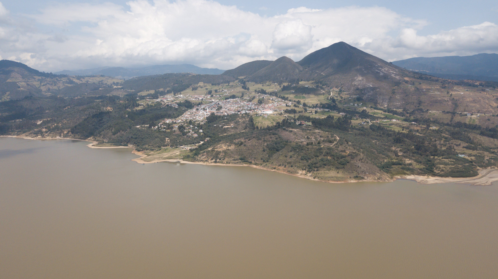
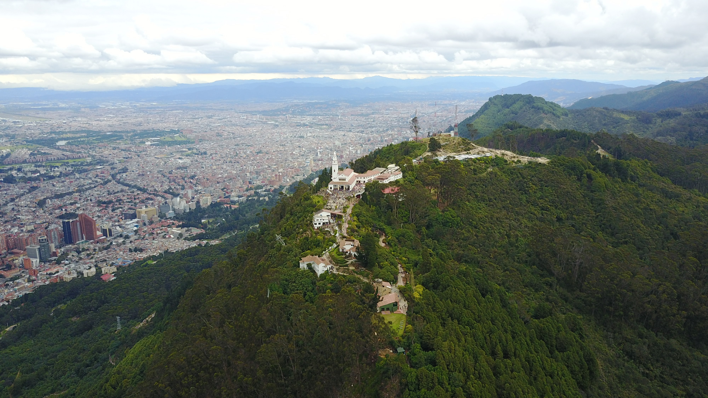
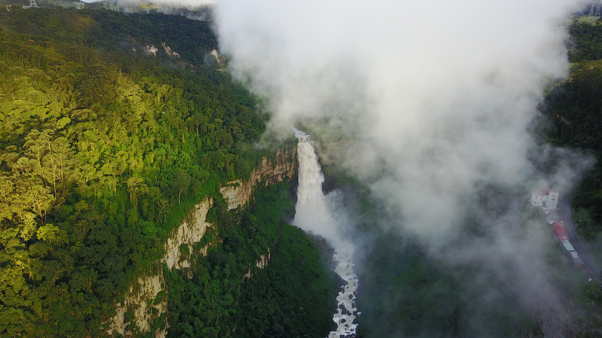

¿Qué es la fotografía áerea?
Es una técnica de captura de imágenes que se realiza desde una posición elevada en el aire, generalmente utilizando aeronaves como aviones, drones o globos aerostáticos. El objetivo principal de la fotografía aérea es obtener una perspectiva única y panorámica de paisajes, áreas geográficas o objetos desde un punto de vista que no es posible lograr desde tierra. Esta técnica se utiliza en diversas aplicaciones, como la cartografía, la planificación urbana, la agricultura, la topografía, la vigilancia, la fotografía artística y la documentación de eventos y lugares de interés. La fotografía aérea ha evolucionado con la tecnología digital y la popularización de los drones, lo que ha facilitado su acceso y uso en una amplia variedad de campos.
Ejemplo de este tipo de fotografía con drones
Las fotos expuestas a continuación fueron tomadas con un drone DJI modelo Mavic.
Guatavita-Cundinamarca
Fotografía tomada al pueblo de Guatavita en Cundinamarca y el embalse del Tominé, en esta se observa como se puede ampliar el angulo de visión de un lugar al realizar este tipo de fotografía.
Monserrate - Bogotá
Fotografía tomada a una distacia aproximada de 500 metros de Monserrate, esta foto se realizo desde el cerro de Guadalupe, desde allí tenemos una perspectiva muy diferente de como esta distribuida la iglesia y sus alrededores.
Salto del Tequendama - Cundinamarca
Una de las fotos más complicadas de tomar, dado el clima humedo de esta zona, la mayor parte del día se presente mucha neblina, lo que impide registrar este paisaje.
Tipos de drones
Dron de carreras
Los drones de carreras FPV son los que más llaman la atención de los amantes de los drones, debido a las velocidades que llegan a alcanzar y como esquivan obstáculos. Su velocidad oscila entre los 160 y 200km/h.
Dron de uso civil
Estos drones estan pensados para un vuelo en interiores y de fácil manejo para los más pequeños y que además, cuentan con un precio bastante asequible.
Dron de uso militar
Son utilizados en muchas tares y son conocidos comúnmente como UCAV, que son las siglas de Unmanned Combat Air Vehicle. Traducido se le denomina aviones no tripulados de combate.
Drones en el cine
Son una herramienta perfecta para crear tomas y grabar escenas imposibles, son drones en los que se busca la grabación y creación de videos con calidad cinematográfica, calidad en 4K, Time-lapse, imágenes en 360 grados y demás tomas.
Drones de rescate
Poseen una maniobrabilidad mayor, se desplazan con facilidad sobre terrenos irregulares, llegan a lugares de difícil acceso, capturan imágenes en alta definicion y reducen significativamente los tiempos de respuesta.